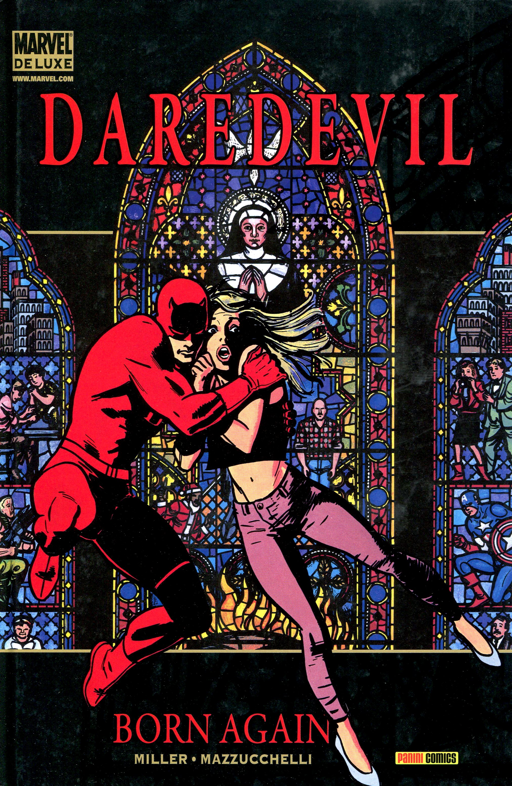

Why I'm Interested
The main reason I like comic books is because of the character development comic book creators do to their characters. Frank Miller (author of Daredevil Born Again) made a huge success with Daredevil. Although he did killed of Karen Page, (love interest of Daredevil) Frank made the story not much of a hero story but more of a criminal investigation story. In the story, Daredevil has a tie on an enemy called Bullseye. Bullseye is an ex-police officer from Hell's Kitchen and knows who Daredevil is. While trying to save Karen and their newborn child. Bullseye kills Karen and kidnaps Daredevils child. Daredevil manages to save his child and realizes that this isn't a life his daughter should go through. In conclusion, he give up his daughter to a foster family and is giving a privilege to see her everyone month as uncle Matt.